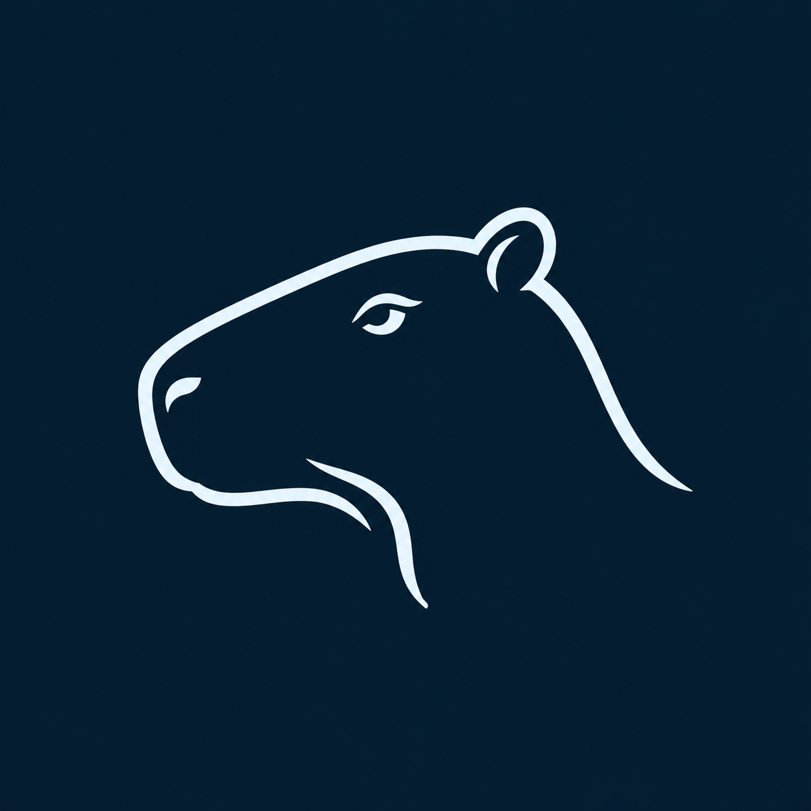
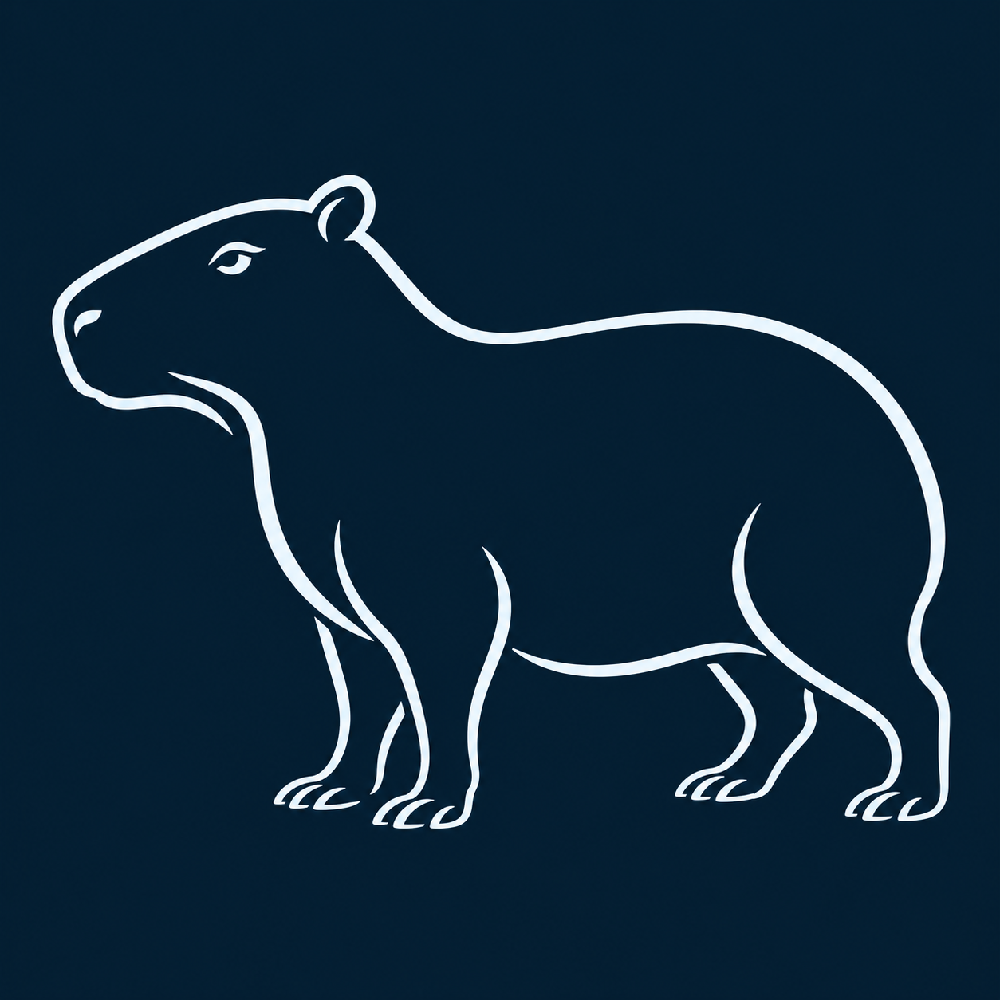
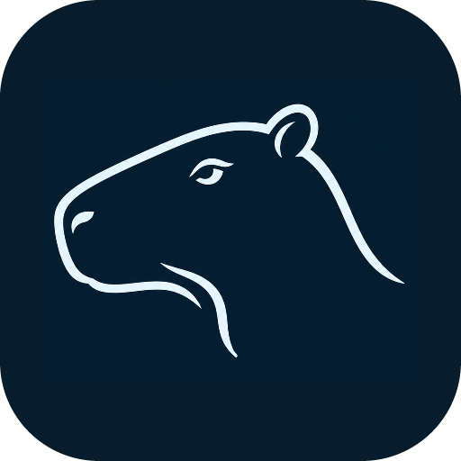
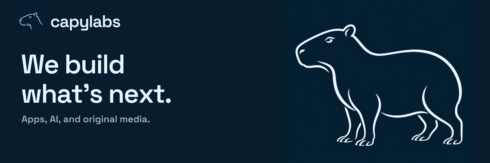

capylabs,
by design.
Technical ambition. A curious character. One identity for our products, AI, and original media.
Download the brand kitA clear signature.
Quiet Profile: a long muzzle, a small rounded ear, and a calm eye. Paired with capylabs, always one word.



Give the head room to breathe. Keep the muzzle and eye intact. The selected artwork is PNG; the joined wordmark is outlined. Keep the logo on navy.
Curiosity, in form.
The capybara brings warmth to the technology. Calm, playful, and unmistakably alive.

A few confident lines.
Pure Contour carries the logo’s calm expression into a full-body drawing. Open space and flowing lines give the animal its shape.
- Give the animal room to breathe.
- Keep copy away from its face.
- Use the simple mark at small sizes.
- A small curious gesture beats constant motion.

Light, on midnight.
Navy gives the work space. Ice makes it clear. Cyan adds a spark.
Ice
Cyan
Steel
Deep blue
Use ice, cyan, or steel text on navy. Use navy text on light backgrounds. Deep blue is for supporting surfaces and graphics.
Direct by design.
Space Grotesk gives the identity its shape. Manrope makes longer copy easy to read.
We build
what's next.
Space Grotesk
Headlines and short statements. Medium to bold. Sentence case.
Apps, AI, and
original media.
Manrope
Body copy, navigation, and controls. Regular to bold. Room to breathe.
Open-source typefaces, self-hosted on this site. Font files and licenses are included in the kit.
Say it simply.
Short sentences. Concrete verbs. Technical depth without the fog.
Company introduction
We build apps, AI tools, and original media.
A technical principle
The engine calculates.
AI explains.
Product endorsement
Built by capylabs.
Media endorsement
A capylabs production.
Show the work. Name what's ready and what's still being built. Let the capybara supply the playfulness.
Ready to use.
Selected PNG artwork, outlined wordmarks, logo layouts, fonts, tokens, and social previews.
A familiar face.
A simple avatar, a bold cover, and room for the work. Use the same identity across company profiles.


Profile bio: Apps, AI, and original media. We build what's next.